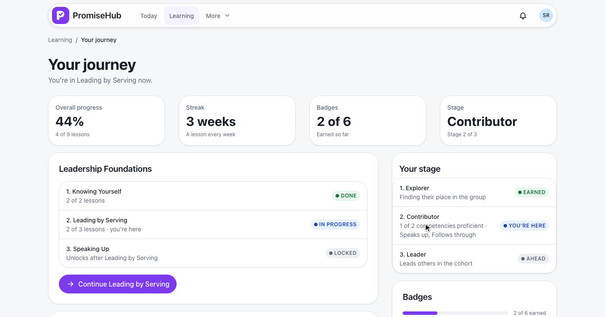
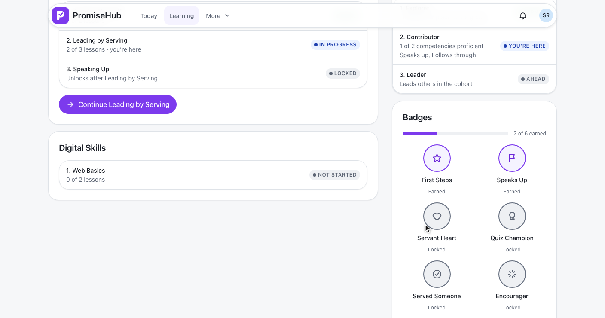
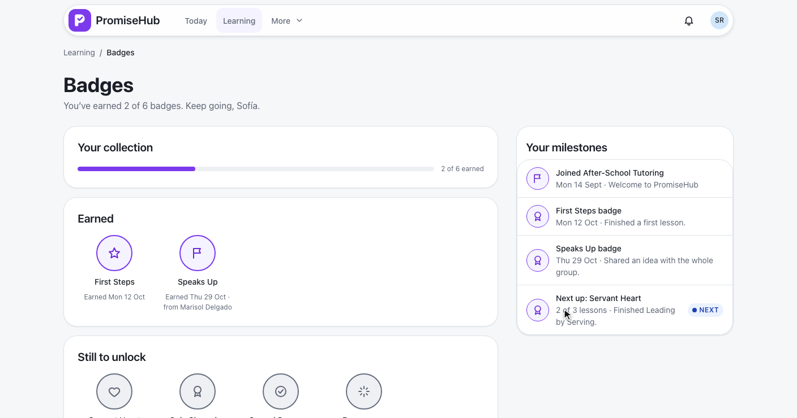
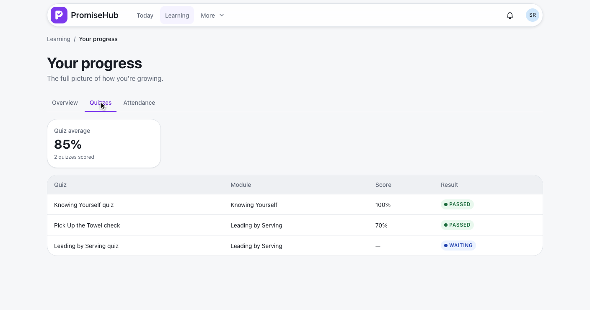
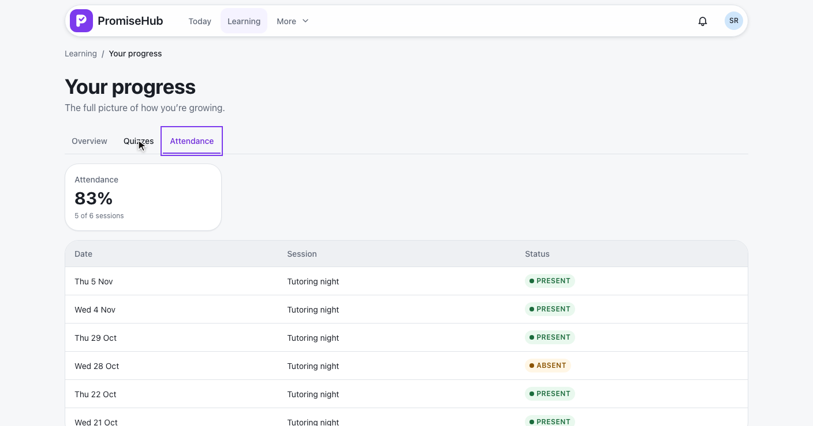
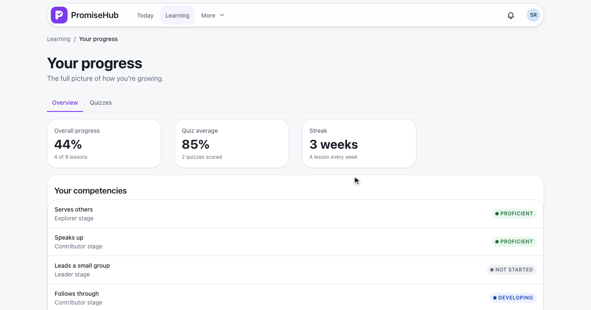

PromiseHub · Video 65
View journey and progress
A youth's roadmap, streak, stage, badges and progress, computed by the server
A youth's roadmap, streak, stage, badges and progress, computed by the server
From Learning: her numbers, her roadmap, her stage and her badges.


| Number | How the server counts it |
|---|---|
| Streak | Weeks in a row (Monday to Sunday, UTC) with a lesson completed, from this week or last week |
| Stage earned | Every competency in it at Proficient or Mastered, by her latest assessment |
| You're here | The first stage not earned; later stages are ahead |
| Overall progress | Lessons done of every published lesson of her followed tracks, as on Learning |
Computed on read, nothing stored · ADR 0059
Earned with when and who, still to unlock with how far, and her milestones.

Overview, then Quizzes and Attendance with the arrow keys.


The journey, badges and progress.
No track, no badge, Roll Call off, a failed load, not open yet, Learning off.
| Caller | Answer |
|---|---|
| Youth, placed and consented | Her own journey, badges and progress |
| Youth without consent or a program | 403, the page points to Learning |
| Staff and mentors | 403 |
| Roll Call off | No attendance in the answer |
| Learning off | 404, routes go to Today |

LearningJourneyTests: counts, roadmap, streak across weeks, stagesLearningBadgesTests, LearningProgressTests: earned and locked, milestones, quizzes, attendance on and offjourney.spec.ts, badges.spec.ts, progress.spec.ts on phone and laptop, with axe
Next: youth write reflections